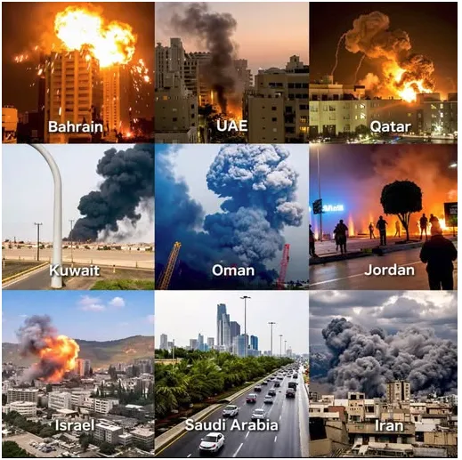

Pomimo zapewnień przedstawicieli władz USA, że irański potencjał rakietowy i dronowy został w dużej mierze zniszczony, dane z ostatnich tygodni wskazują, że zdolność operacyjna Teheranu nie uległa znacznemu pogorszeniu, a ataki w Izraelu i kilku krajach regionu trwają nieprzerwanie od 28 lutego.
Ważne zestawienie irańskich ataków.

"Pomimo zapewnień przedstawicieli władz USA, że irański potencjał rakietowy i dronowy został w dużej mierze zniszczony, dane z ostatnich tygodni wskazują, że zdolność operacyjna Teheranu nie uległa znacznemu pogorszeniu, a ataki w Izraelu i kilku krajach regionu trwają nieprzerwanie od 28 lutego.
Według danych zebranych przez Anadolu z ministerstw obrony i spraw wewnętrznych Zjednoczonych Emiratów Arabskich, Kuwejtu, Arabii Saudyjskiej, Kataru, Bahrajnu, Omanu i Jordanii, a także z Instytutu Studiów nad Bezpieczeństwem Narodowym (INSS) z siedzibą w Tel Awiwie, platform wywiadowczych o otwartym dostępie oraz kont w mediach społecznościowych zajmujących się analizą danych, Iran od 28 lutego w ramach swojej strategii odwetowej wystrzelił 6770 pocisków i bezzałogowych statków powietrznych (BSP) w kierunku krajów Zatoki Perskiej, Jordanii i Izraela.
Najwięcej ataków przeprowadzono w Zjednoczonych Emiratach Arabskich (2429), następnie w Izraelu (1365) i Kuwejcie (950).
Jednak dane INSS wskazują, że Iran użył w odwetowych atakach na Izrael 600 pocisków i 765 dronów.
Stałe tempo ataków na Izrael
Ataki Iranu na Izrael i wyrządzone przez nie szkody utrzymują się według stosunkowo stałego schematu: w ciągu ostatniego tygodnia liczba fal rakiet i dronów wahała się od siedmiu do dziesięciu.
Według danych INSS, w ciągu ostatniego tygodnia Iran przeprowadził 215 ataków dronów na Izrael, co stanowi około 28% wszystkich ataków dronów przeprowadzonych w ciągu czterech tygodni.
Biorąc pod uwagę, że do 19 marca Iran przeprowadził około 500 odwetowych ataków dronów na Izrael, 215 ataków w ostatnim tygodniu nie wskazuje na znaczącą zmianę w zdolnościach operacyjnych Iranu.
INSS poinformował również, że w ciągu ostatniego tygodnia Iran wystrzelił w stronę Izraela 200 rakiet, co stanowi 31% z 585 rakiet wystrzelonych w ciągu czterech tygodni.
Analitycy zauważają, że gdyby irański potencjał rakietowy został w dużej mierze zniszczony, wskaźnik ten prawdopodobnie pozostałby poniżej 25%. Wartość przekraczająca 30% sugeruje, że potencjał uderzeniowy Iranu pozostaje w dużej mierze nienaruszony.
26 marca prezydent USA Donald Trump poinformował, że około 90% irańskich systemów rakietowych i wyrzutni zostało wyłączonych, dodając, że znacząco ograniczono także zdolność produkcyjną dronów, pocisków i powiązanych z nimi obiektów.
ZEA i Kuwejt najczęściej atakowane w Zatoce Perskiej
Pomimo dziennych wahań, częstotliwość irańskich ataków na kraje Zatoki Perskiej pozostała stabilna w ujęciu tygodniowym w porównaniu z pierwszym tygodniem po 28 lutego.
Między 28 lutego a 31 marca Iran najczęściej atakował Zjednoczone Emiraty Arabskie, wystrzeliwując 2429 pocisków i dronów. Kuwejt zajął drugie miejsce wśród państw Zatoki Perskiej z liczbą 950 ataków.
Ataki na Katar wznowione po zawarciu umowy obronnej
Według dostępnych danych, od 28 lutego Katar stał się celem 256 ataków rakietowych i dronów, przy czym ostatni odnotowany atak miał miejsce 19 marca.
Iran wznowił ataki po tym, jak Katar podpisał 28 marca umowę o strategicznej współpracy obronnej z Ukrainą, obejmującą wymianę doświadczeń w dziedzinie wojny rakietowej i bezzałogowych statków powietrznych.
Spadek liczby ataków na Arabię Saudyjską i Bahrajn
Arabia Saudyjska, która początkowo była celem stosunkowo niewielu ataków, od 11 marca odnotowała wzrost liczby ataków. Ataki osiągnęły apogeum 16 marca, kiedy Iran użył 98 rakiet i dronów.
Jednakże liczba ataków spadła do ok. 30 dziennie na początku czwartego tygodnia, a później nastąpił dalszy spadek.
Do jednego z najbardziej pamiętnych incydentów doszło 27 marca, kiedy Iran zniszczył w bazie lotniczej Prince Sultan amerykański samolot E-3 Sentry o wartości około 300 milionów dolarów.
W ostatnich dniach zmalała liczba ataków na Bahrajn, a liczba ataków na Jordanię również wykazywała tendencję spadkową w ciągu ostatnich dwóch tygodni.
Irański atak 29 marca uszkodził dwie fabryki aluminium w Bahrajnie i Zjednoczonych Emiratach Arabskich.
Po stosunkowo niewielkiej liczbie ataków w pierwszych dwóch tygodniach, 28 marca Iran przeprowadził również atak dronów na Oman.
USA i Izrael przeprowadziły prawie 21 000 ataków na Iran
Według Białego Domu, do 30 marca Stany Zjednoczone zaatakowały „ponad 11 000 wrogich celów” w Iranie.
Biały Dom poinformował, że liczba irańskich ataków rakietowych i dronów spadła o około 90%, a zniszczeniu uległo ponad 150 okrętów wojennych, w tym 92% największych irańskich okrętów.
Tymczasem Siły Obronne Izraela poinformowały, że przeprowadzono ponad 800 fal nalotów w całym Iranie, wykorzystując około 16 000 bomb i pocisków.
Ataki te wymierzone były w ponad 4000 obiektów, w tym systemy obrony powietrznej, wyrzutnie pocisków balistycznych, zakłady produkujące broń, obiekty nuklearne, siedziby wojska oraz dowódców wojskowych i przywódców politycznych. Łącznie przeprowadzono ponad 10 000 pojedynczych ataków.
* Tekst napisał Gizem Nisa Demir w Stambule"
aa com tr